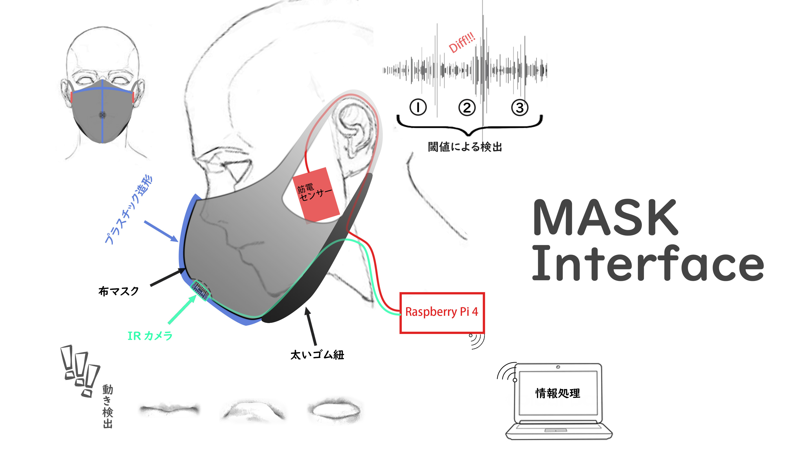
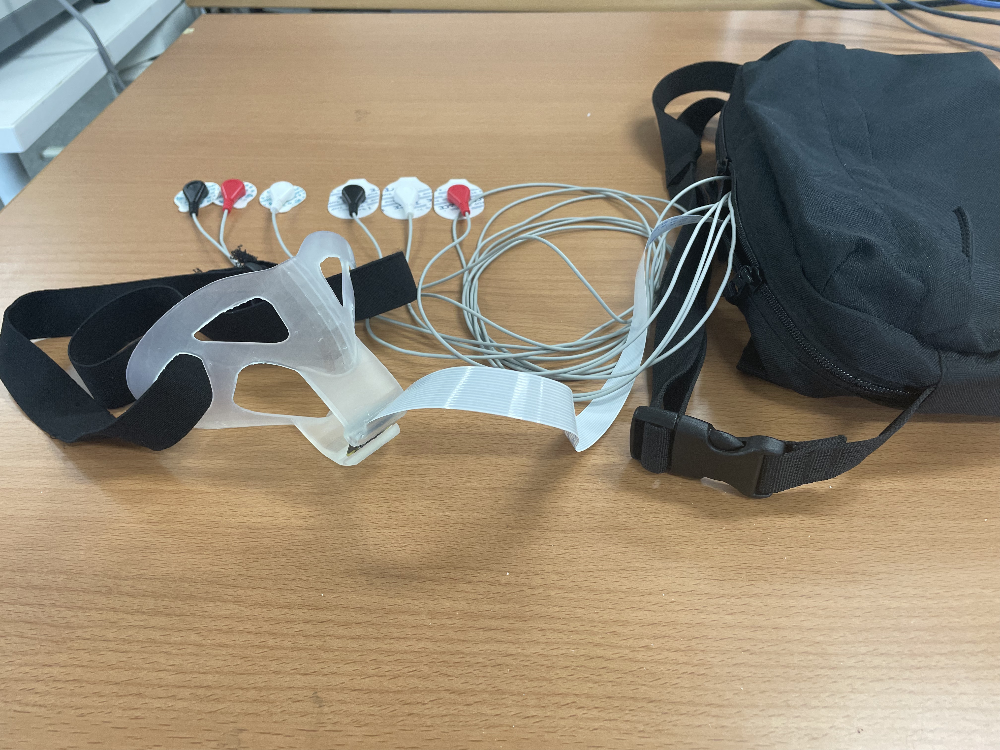
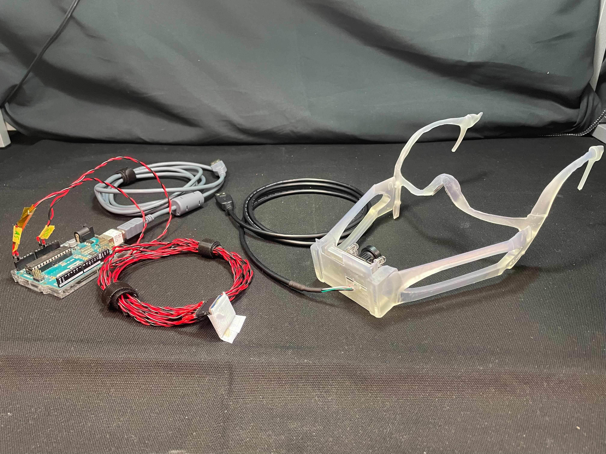

「噛み飛口機」は，口腔機能のトレーニングを目的としたコンテンツである．近年，口腔機能に関する病気が問題視されている．そこで，口腔機能に関わる複数の動作を測定可能なマスク型インターフェースとそれを活用したシリアスゲームの開発に取り組んだ．ゲームでは，マスク型インターフェースから取得した唇や咀嚼の動作をコントローラとして，紙飛行機を移動させてリングをくぐり抜けたり，鳥になって食べ物をかみ砕いたりしながら得点を稼いでいく．
本作品は，私が所属する電気通信大学主催のものづくりコンテスト「U☆PoC」において，協賛企業のアフラック生命保険株式会社様より協賛企業賞を受賞した．
また，日本バーチャルリアリティ学会が主催する学生対抗バーチャルリアリティチャレンジ「IVRC」において，倍率4倍を超える書類審査を突破し（全104件の応募から25件通過），作品を展示した．
紹介動画
U☆PoC
IVRC
関連リンク
U☆PoC
U☆PoC2023の概要
U☆PoC2023プロトタイプ審査会の様子
U☆PoC2023表彰式の様子
IVRC
IVRC2023 SEED STAGE
第28回日本バーチャルリアリティ学会予稿集 噛み飛口機
システム
 マスク型インタフェース「噛み飛口機マスク」を通じて，唇の動きと口の開閉運動，かみしめる動作を記録するシステムについて説明する．本インタフェースには筋電センサーと赤外線カメラが搭載されている．筋電センサーはユーザの頬につけることで，口のかみしめ圧力を記録する．また，赤外線カメラを本インタフェースの内側に設置することで，ユーザの唇の形と口の開閉運動を撮影する．これらの情報はRaspberry Pi 4を経由してPC（Unity）に送信され，撮影データは画像認識を使用して口や唇の形を測定し，圧力データはノイズ処理を施した後計測することで，入力データとして様々な用途で使用することができる．本作品ではゲームの入力インターフェースとして唇を動かす方向，口の開閉運動，かみしめ圧力を使用している．また，ゲーム画面はディスプレイに出力される．このように，ユーザはマスク型インタフェースを装着することで，口の形と咬合運動を入力としたインタラクティブなゲームを体験することができる．
担当
噛み飛口機マスクの作成，筋電計測の実装
作成した噛み飛口機マスク
プロトタイプ1
プロトタイプ1は，噛み飛口機マスクから伸ばした紐を頭に通して固定する形で装着する．また，マスクの先端に取り付けられたカメラや咀嚼を計測するための筋電センサの情報を処理するハードウェアを格納したショルダーバッグを肩にかけるものとなっている．
プロトタイプ2
プロトタイプ1は，噛み飛口機マスクを含めたデバイス全体の脱着に時間がかかってしまい，脱着も難しかった．そこで，プロトタイプ2では，脱着時間の削減，装着時の不快感の低減を目的に改善を行った．
アップデートしたマスクは，メガネのように耳に引っ掛ける構造となっているため，脱着は一瞬で行うことが可能である．また，カメラや咀嚼計測センサを簡素化し，ハードウェアを少なくすることで，ユーザに対する装着の負担を軽減できる．
